멀티 센서 캘리브레이션 툴킷 개발
Multi-Sensor Calibration Toolkit
CalibrationRGB/LWIRStereoCamera-LiDARLiDAR-LiDARAuto-Calibration
Overview
본 연구는 RGB/LWIR 카메라의 내부 파라미터와 스테레오, 카메라-라이다, 라이다–라이다의 외부 파라미터를 단일 프레임워크에서 자동 추정하는 다중 센서 캘리브레이션 툴킷 구축을 목적으로 한다.
통합 체계: 타겟(체커보드, ChArUco) 검출을 공통 모듈로 두고, 그 위에 카메라 모델(pinhole, fisheye), 스테레오/PnP 외부 캘리브레이션, 평면 대응 기반 카메라–라이다 정렬, ICP/타겟 기반 라이다–라이다 정합을 일원화한다. 특히 카메라–라이다는 초기 변환행렬 없이 자동 초기화하는 오토 캘리브레이션을 목표로 한다.
강건화: 모션 블러, 노이즈 등 비이상적 데이터에 대응하기 위해 반복적 이상치 제거, 다중 스케일 ICP, 강건 손실(Huber, Cauchy) 기반 번들 조정을 적용한다.
검증 가능성: 재투영 오차, RMSE 기반 정량적 품질 등급과 커버리지 맵, 오차 히트맵 시각화를 제공해 신뢰할 수 있는 워크플로를 구현한다.
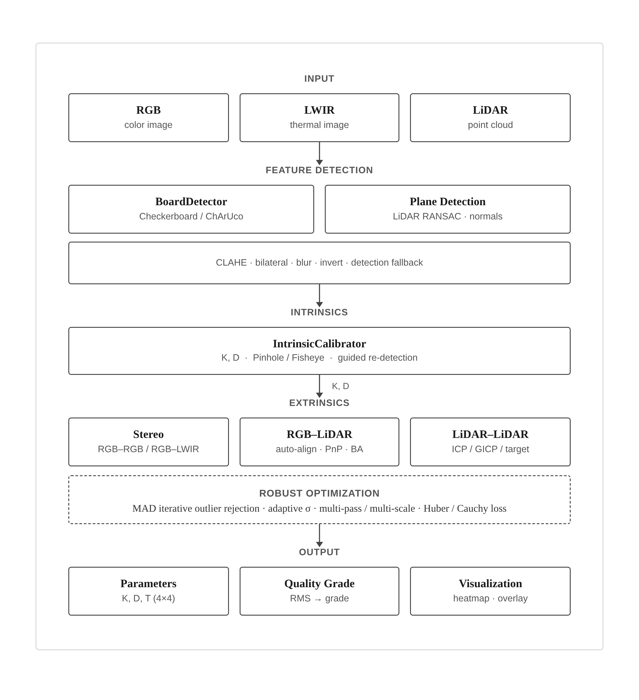
Scope참여 연구 항목
- RGB/LWIR Camera Intrinsic calibration
- Camera – LiDAR Extrinsic calibration
- 재사용 가능한 툴킷화
My Role
01Intrinsic calibration
- 평면 타겟(Zhang) 기반 초기화 및 코너 재검출 반복 최적화 수행
- Cauchy loss 적용으로 이상치에 강건하며 높은 재현성 확보
- 타겟의 화면 커버리지 부족 시 오차 발생 및 어안 렌즈 제약 존재
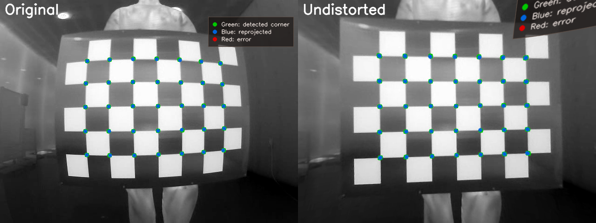
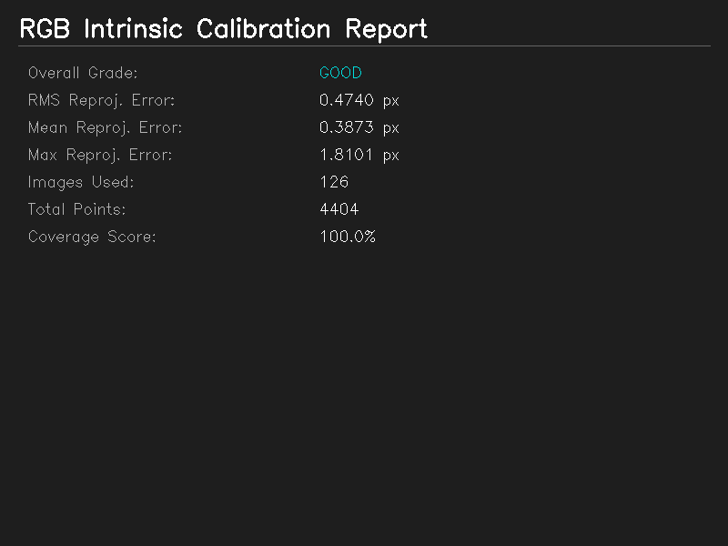
02Camera – LiDAR Extrinsic calibration
- plane to plane 일치 제약 기반, 수동 초기값 없는 자동 자세 추정
- EM 알고리즘과 Huber 손실 적용으로 희소 데이터 및 부분 가림에 강건
- 카메라 내부 파라미터 정확도에 의존하며, 보드 평면의 기울기 다양성 부족 시 추정 불안정
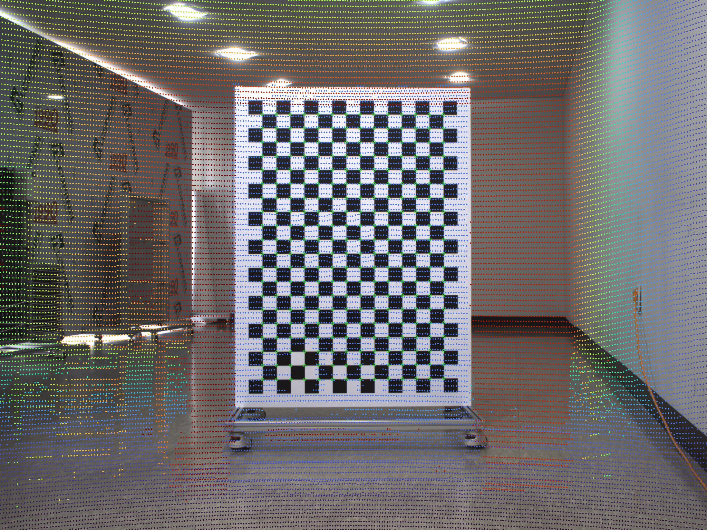
03툴킷화 및 검증
- 재투영 오차, RMSE 기반 정량적 품질 등급 시스템 제공
- 커버리지 맵, 오차 히트맵 등 시각화로 검증 지원
- 현장에서 재사용 가능한 툴킷 형태로 패키징
- 정량 성과 — 카메라 내부 재투영 RMSE 0.5px 이내, 카메라–LiDAR 외부 RMSE 10mm 이내
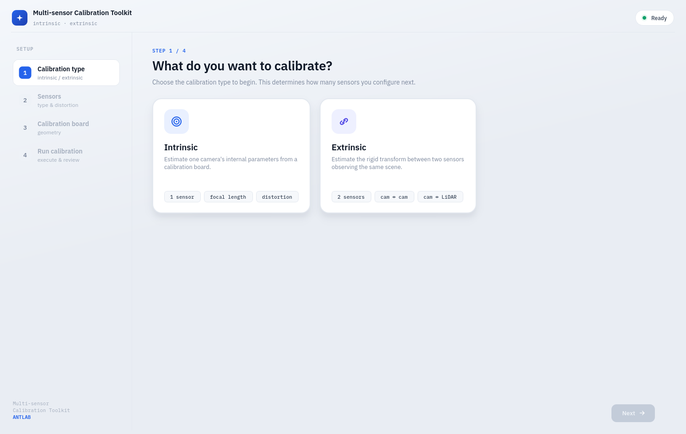
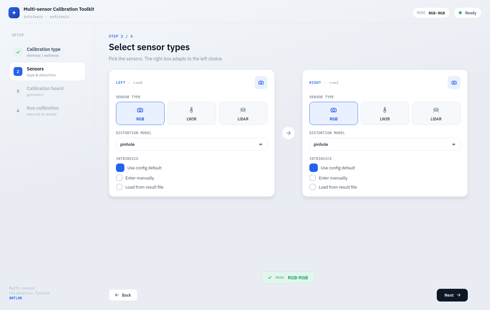
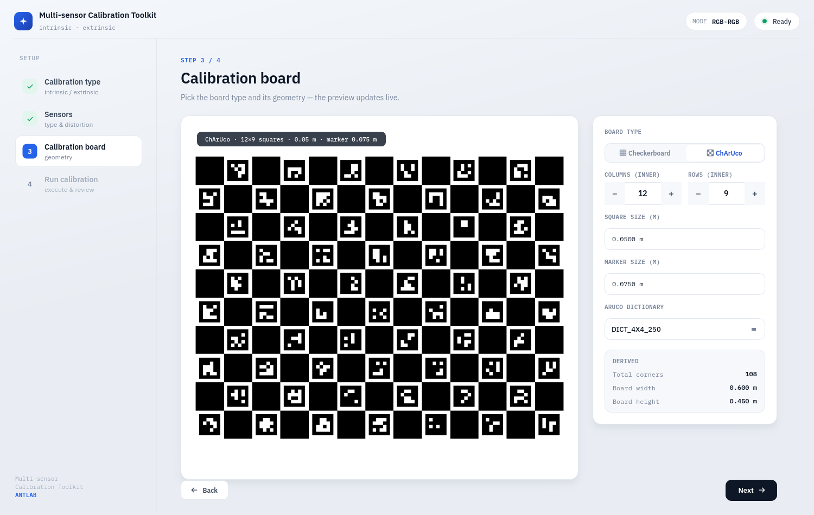
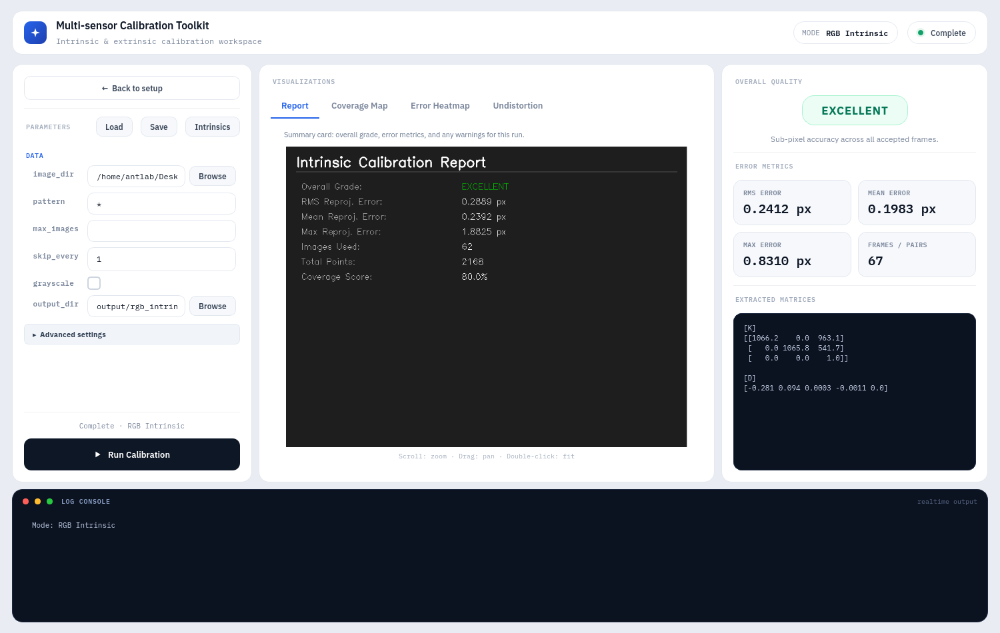
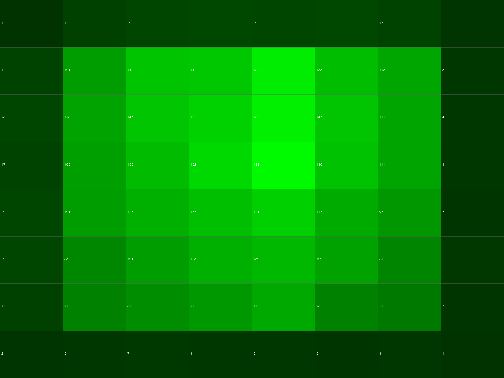
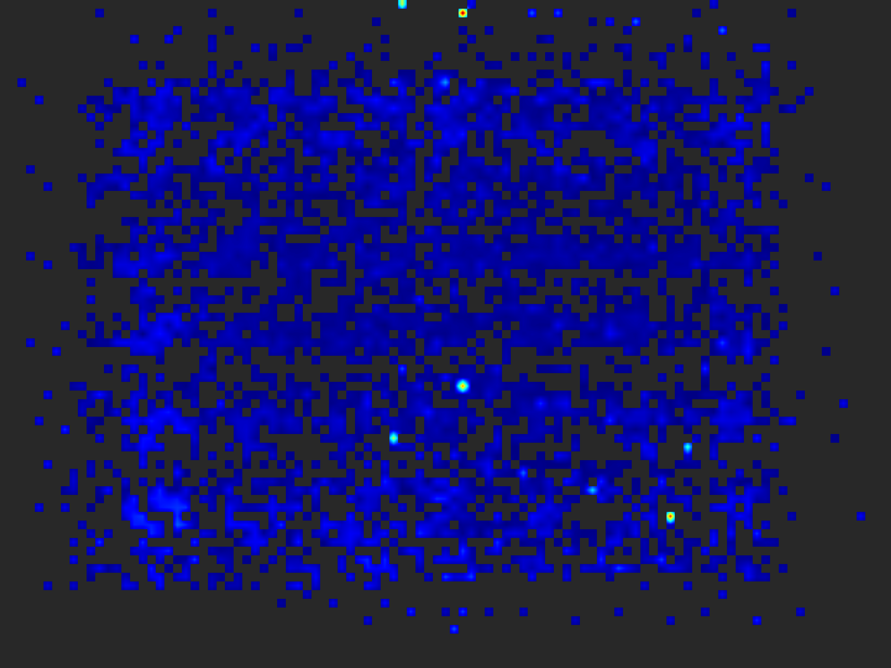
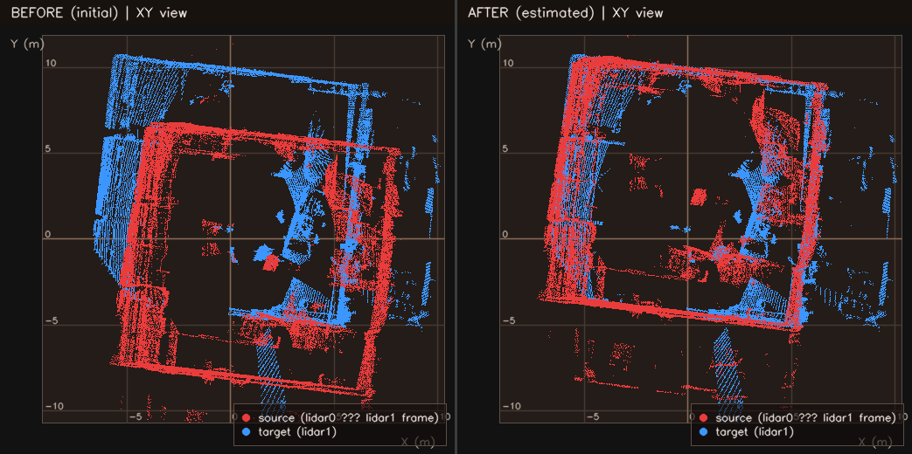
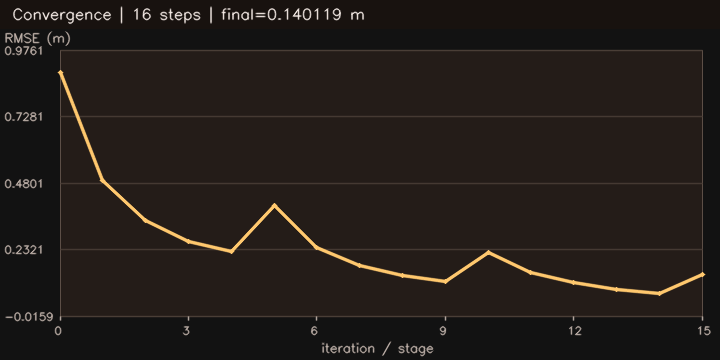